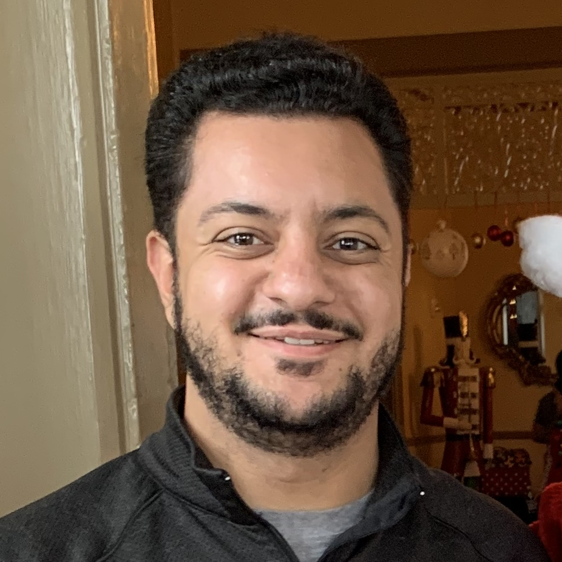

About Me

Thank you for visiting my website! My name is Mark Younan and I am a Software Engineer in the San Francisco Bay Area. My whole life, I've always had a fascination with technology and figuring out new, more efficient ways to complete every day tasks in order to make life easier. In many cases, this is a frustrating process, however, the results yielded are always incredibly rewarding.
When I am not at work, I enjoy playing golf, watching basketball, and going to the beach. I'm also into super cars and I love and spending time with my family. Additionally, I am a cantor for the Coptic Orthodox Church. My responsibilities include leading the chorus of deacons during liturgical services and being the director of the Hymnological School in charge of teaching Coptic hymns to multiple deacon classes of various age groups.